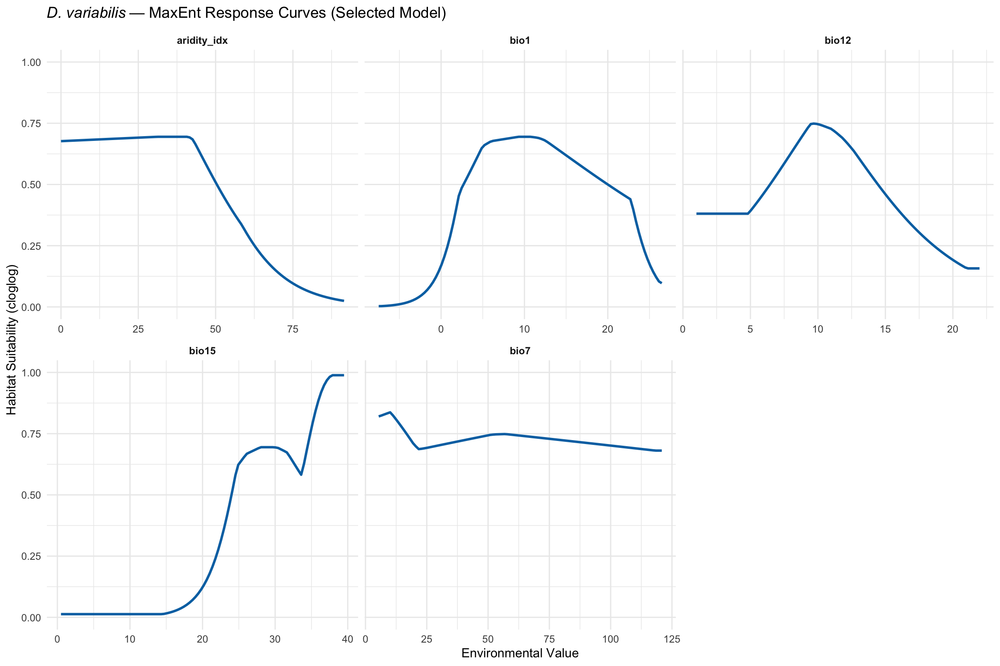

library(tidyverse)
library(terra)
library(ENMeval)
library(rJava)Step 5: MaxEnt Model Fitting via ENMeval
Dermacentor variabilis Species Distribution Model
Overview
This script fits MaxEnt models using the ENMeval 2.0 framework for systematic model tuning. We test 18 candidate models (3 feature class combinations x 6 regularization multipliers) using spatial block cross-validation.
Product features (P) are excluded to prevent overly complex models that transfer poorly to novel environments. Minimum regularization is set to 1.0 to encourage smoother response surfaces suitable for cross-continental projection.
Model selection follows multi-criteria:
- AICc (parsimony) — primary criterion
- AUC difference < 0.1 (training - validation) — overfitting filter
- Omission rate at 10% threshold
- Preference for simpler models when AICc is within 2 units
1. Load data
base_dir <- "~/Library/CloudStorage/OneDrive-CSIRO/OneDrive - Docs/01_Projects/SDM/Dvariabilis_SDM"
processed_dir <- file.path(base_dir, "processed_data")
figures_dir <- file.path(base_dir, "figures")
# Occurrence data
occ_env <- readRDS(file.path(processed_dir, "occurrences_with_env.rds"))
occ_coords <- occ_env %>% select(decimalLongitude, decimalLatitude)
# Background data
bg_env <- readRDS(file.path(processed_dir, "background_with_env.rds"))
bg_coords <- bg_env %>% select(decimalLongitude = lon, decimalLatitude = lat)
# Environmental stack (selected variables, M extent)
env_M <- rast(file.path(processed_dir, "env_selected_M.tif"))
# Selected variables
selected_vars <- readLines(file.path(processed_dir, "selected_variables.txt"))
sprintf("Occurrences: %d | Background: %d | Variables: %d",
nrow(occ_coords), nrow(bg_coords), length(selected_vars))
cat("Selected variables:", paste(selected_vars, collapse = ", "), "\n")[1] "Occurrences: 4580 | Background: 9955 | Variables: 5"
Selected variables: aridity_idx, bio1, bio12, bio15, bio7 2. Define tuning parameters
# Feature classes to test
# NOTE: Product features (P) removed — they create highly complex interaction
# terms (185+ coefficients at low regularization) that overfit training data
# and transfer poorly to novel environments (Australia). LQH is sufficient
# to capture non-linear responses.
feature_classes <- c("L", "LQ", "LQH")
# Regularization multipliers
# NOTE: Minimum increased from 0.5 to 1.0. Low regularization (0.5) with
# complex feature classes leads to overfitting for cross-continental transfer.
# Higher regularization produces smoother response surfaces that generalise better.
reg_multipliers <- c(1, 1.5, 2, 3, 4, 5)
# Total candidate models
n_models <- length(feature_classes) * length(reg_multipliers)
sprintf("Testing %d candidate models (%d feature classes x %d regularization multipliers)",
n_models, length(feature_classes), length(reg_multipliers))[1] "Testing 18 candidate models (3 feature classes x 6 regularization multipliers)"3. Run ENMeval
Fit all candidate models using spatial block cross-validation (4 folds).
set.seed(7990)
cat("Running ENMevaluate — this may take several minutes...\n")
enmeval_results <- ENMevaluate(
occs = occ_coords,
envs = env_M,
bg = bg_coords,
algorithm = "maxent.jar",
partitions = "block",
tune.args = list(
fc = feature_classes,
rm = reg_multipliers
),
doClamp = TRUE,
parallel = TRUE,
numCores = 4
)
cat("ENMevaluate complete.\n")
sprintf("Tested %d models", nrow(enmeval_results@results))Running ENMevaluate — this may take several minutes...
ENMevaluate complete.
[1] "Tested 18 models"4. Model selection — multi-criteria
results <- enmeval_results@results
# Add derived metrics
results <- results %>%
mutate(
# AUC difference (overfitting indicator)
auc.diff = auc.train - auc.val.avg,
# Delta AICc
delta.AICc = AICc - min(AICc, na.rm = TRUE)
)
# Display all model results
cat("All model results:\n")
results %>%
select(fc, rm, auc.train, auc.val.avg, auc.diff,
or.10p.avg, AICc, delta.AICc, ncoef) %>%
arrange(AICc) %>%
as_tibble() %>%
print(n = Inf)All model results:
# A tibble: 18 × 9
fc rm auc.train auc.val.avg auc.diff or.10p.avg AICc delta.AICc ncoef
<chr> <dbl> <dbl> <dbl> <dbl> <dbl> <dbl> <dbl> <dbl>
1 LQH 1 0.851 0.824 0.0274 0.182 1.15e5 0 124
2 LQH 1.5 0.850 0.822 0.0279 0.176 1.15e5 83.3 109
3 LQH 2 0.849 0.823 0.0257 0.165 1.15e5 172. 103
4 LQH 3 0.847 0.823 0.0238 0.146 1.15e5 302. 84
5 LQH 4 0.846 0.821 0.0247 0.141 1.16e5 455. 95
6 LQH 5 0.845 0.819 0.0264 0.140 1.16e5 548. 80
7 LQ 1 0.822 0.801 0.0212 0.176 1.16e5 1173. 7
8 LQ 1.5 0.822 0.801 0.0206 0.176 1.16e5 1302. 7
9 LQ 2 0.821 0.801 0.0198 0.177 1.16e5 1413. 6
10 LQ 3 0.820 0.800 0.0203 0.185 1.17e5 1596. 6
11 LQ 4 0.819 0.798 0.0214 0.189 1.17e5 1791. 6
12 LQ 5 0.817 0.794 0.0231 0.197 1.17e5 1995. 6
13 L 1 0.771 0.745 0.0259 0.216 1.18e5 3321. 5
14 L 1.5 0.770 0.744 0.0259 0.215 1.18e5 3381. 5
15 L 2 0.769 0.743 0.0260 0.213 1.19e5 3445. 5
16 L 3 0.765 0.739 0.0261 0.209 1.19e5 3582. 5
17 L 4 0.761 0.737 0.0242 0.205 1.19e5 3734. 5
18 L 5 0.756 0.736 0.0198 0.204 1.19e5 3893. 55. Apply selection criteria
# Step 1: Filter by AUC difference < 0.1 (overfitting filter)
auc_diff_threshold <- 0.1
candidates <- results %>%
filter(auc.diff < auc_diff_threshold)
if (nrow(candidates) == 0) {
cat("WARNING: No models with AUC diff < 0.1. Relaxing to 0.15.\n")
auc_diff_threshold <- 0.15
candidates <- results %>%
filter(auc.diff < auc_diff_threshold)
}
sprintf("Models passing AUC difference filter (< %.2f): %d of %d",
auc_diff_threshold, nrow(candidates), nrow(results))
# Step 2: Among passing models, select by AICc
# If multiple models within 2 AICc units, prefer simpler (fewer coefficients)
best_AICc <- min(candidates$AICc, na.rm = TRUE)
top_candidates <- candidates %>%
filter(AICc <= best_AICc + 2) %>%
arrange(ncoef, AICc)
cat("\nTop candidate models (within 2 AICc of best):\n")
top_candidates %>%
select(fc, rm, auc.train, auc.val.avg, auc.diff, or.10p.avg, AICc, delta.AICc, ncoef) %>%
as_tibble() %>%
print(n = Inf)
# Select the simplest model within 2 AICc of the best
selected_model_idx <- top_candidates$tune.args[1]
selected_row <- top_candidates[1, ]
cat("\n--- SELECTED MODEL ---\n")
sprintf("Feature class: %s", selected_row$fc)
sprintf("Regularization multiplier: %s", selected_row$rm)
sprintf("Training AUC: %.3f", selected_row$auc.train)
sprintf("Validation AUC: %.3f", selected_row$auc.val.avg)
sprintf("AUC difference: %.3f", selected_row$auc.diff)
sprintf("Omission rate (10%%): %.3f", selected_row$or.10p.avg)
sprintf("AICc: %.1f", selected_row$AICc)
sprintf("Number of coefficients: %d", selected_row$ncoef)[1] "Models passing AUC difference filter (< 0.10): 18 of 18"
Top candidate models (within 2 AICc of best):
# A tibble: 1 × 9
fc rm auc.train auc.val.avg auc.diff or.10p.avg AICc delta.AICc ncoef
<chr> <dbl> <dbl> <dbl> <dbl> <dbl> <dbl> <dbl> <dbl>
1 LQH 1 0.851 0.824 0.0274 0.182 115055. 0 124
--- SELECTED MODEL ---
[1] "Feature class: LQH"
[1] "Regularization multiplier: 1"
[1] "Training AUC: 0.851"
[1] "Validation AUC: 0.824"
[1] "AUC difference: 0.027"
[1] "Omission rate (10%): 0.182"
[1] "AICc: 115055.2"
[1] "Number of coefficients: 124"6. Extract the selected model
# Get the selected model object
selected_key <- paste0("fc.", selected_row$fc, "_rm.", selected_row$rm)
selected_model <- enmeval_results@models[[selected_key]]
cat("Selected model key:", selected_key, "\n")Selected model key: fc.LQH_rm.1 7. Variable importance of selected model
# Get variable importance from ENMeval results
var_imp <- enmeval_results@variable.importance[[selected_key]]
cat("Variable importance (selected model):\n")
var_imp %>%
arrange(desc(permutation.importance)) %>%
as_tibble() %>%
print(n = Inf)Variable importance (selected model):
# A tibble: 5 × 3
variable percent.contribution permutation.importance
<chr> <dbl> <dbl>
1 bio1 45.3 35.3
2 aridity_idx 39.1 27.5
3 bio15 8.95 22.0
4 bio12 2.59 10.9
5 bio7 4.02 4.348. Response curves
# Generate response curves using ENMeval
response_data <- list()
for (v in selected_vars) {
# Create a sequence of values for this variable
var_range <- range(terra::values(env_M[[v]]), na.rm = TRUE)
var_seq <- seq(var_range[1], var_range[2], length.out = 100)
# Create a data frame holding all other variables at their mean
mean_vals <- as.data.frame(t(colMeans(
terra::extract(env_M, occ_coords)[, -1],
na.rm = TRUE
)))
pred_df <- mean_vals[rep(1, 100), ]
pred_df[[v]] <- var_seq
# Predict using the selected model
pred <- predict(selected_model, pred_df, type = "cloglog")
response_data[[v]] <- tibble(
variable = v,
value = var_seq,
suitability = pred
)
}
response_all <- bind_rows(response_data)
ggplot(response_all, aes(x = value, y = suitability)) +
geom_line(colour = "#0072B2", linewidth = 1) +
facet_wrap(~variable, scales = "free_x", ncol = 3) +
labs(
title = expression(italic("D. variabilis") ~ "— MaxEnt Response Curves (Selected Model)"),
x = "Environmental Value",
y = "Habitat Suitability (cloglog)"
) +
theme_minimal(base_size = 11) +
theme(strip.text = element_text(face = "bold")) +
ylim(0, 1)
ggsave(
file.path(figures_dir, "05_response_curves.png"),
width = 12, height = 8, dpi = 300
)9. Model selection summary table
# Create summary for all models
model_summary <- results %>%
select(fc, rm, auc.train, auc.val.avg, auc.diff, or.10p.avg,
AICc, delta.AICc, ncoef) %>%
arrange(AICc) %>%
mutate(selected = (fc == selected_row$fc & rm == selected_row$rm))
write_csv(model_summary, file.path(processed_dir, "enmeval_model_summary.csv"))
cat("Model selection summary saved.\n")Model selection summary saved.10. Save outputs
# Full ENMeval results object
saveRDS(enmeval_results, file.path(processed_dir, "enmeval_results.rds"))
# Selected model
saveRDS(selected_model, file.path(processed_dir, "selected_maxent_model.rds"))
# Variable importance
write_csv(var_imp, file.path(processed_dir, "variable_importance_final.csv"))
# Selected model metadata
model_metadata <- list(
feature_class = as.character(selected_row$fc),
reg_multiplier = as.numeric(selected_row$rm),
auc_train = selected_row$auc.train,
auc_val = selected_row$auc.val.avg,
auc_diff = selected_row$auc.diff,
omission_10p = selected_row$or.10p.avg,
AICc = selected_row$AICc,
n_coefficients = selected_row$ncoef,
variables = selected_vars
)
saveRDS(model_metadata, file.path(processed_dir, "selected_model_metadata.rds"))
sprintf("Saved ENMeval results, selected MaxEnt model, and variable importance")[1] "Saved ENMeval results, selected MaxEnt model, and variable importance"